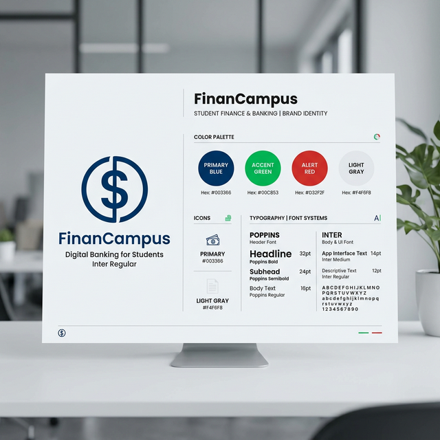

Estudo de Caso 8 — Identidade Visual e Temas
Objetivo da Semana
Dar forma, cor e uma "cara profissional" ao seu MVP. Construir seu Brand Board (logotipo, tipografia, paleta e fundo), garantindo que as definições propostas gerem padronização visual dentro do FlutterFlow (aplicação de estilos no App Theme).
Passo a Passo da Atividade
Peça ideias para paletas de cores baseadas nas emoções e na psicologia que a persona desenhada necessita. Escolha a cor principal, a secundária e as de 'sucesso/falha'. Escolha tipografias complementares.
Exemplo de Prompt: "Atuando como Designer Visual, sugira 3 combinações distintas de paleta de cores e uma tipografia ideal para um app sobre finanças..."
Façam rascunhos criativos de logo e ícone para sua aplicação. Caso queira, passe prompts detalhados sobre as cores encontradas na Atividade 1 em uma IA para gerar uma versão inicial e passe-a para o Canva.
Exemplo de Prompt: "Crie um ícone para um aplicativo mobile. O ícone deve ser simples e plano. Use cores Azul e Verde no fundo..."
Vincule todas essas configurações diretamente no Painel Theme Settings. Padronize as paletas, ajuste as telas que estiverem divergentes e deixe o aplicativo robusto. Suba a imagem do Logo e o ícone.
Cole no entregável um Brand Board mostrando Logo, as 5 Cores Principais em Hexadecimal e Títulos usando a Fonte Principal (Mostrando o Estilo visual na prática).
Para concluir as atividades desta semana, reúna todas as informações e artefatos gerados nos passos anteriores e preencha o template oficial de entrega. Faça uma cópia do documento para a sua conta Google e compartilhe-o com o professor.
📱 Estudo de Caso: FinanCampus
Veja as decisões de identidade visual que o grupo do FinanCampus tomou nesta semana.

Paleta de cores:
- Primária: #2D6AF6 (azul universitário — confiança e tecnologia)
- Acento / destaque: #4CAF50 (verde — para rendas e saldos positivos)
- Alerta: #F44336 (vermelho — para despesas e saldo negativo)
- Fundo: #F5F7FA (cinza claro suave)
- Texto principal: #1A1A2E (azul escuro — alto contraste)
Tipografia: Poppins para títulos (Bold 700) e Inter para corpo do texto (Regular 400). Ambas do Google Fonts, disponíveis nativamente no FlutterFlow.
Logotipo: símbolo de cifrão estilizado dentro de um círculo azul, com o nome "FinanCampus" ao lado em Poppins Bold. Criado no Canva e exportado em PNG 512×512px.
Splash screen: fundo #2D6AF6 com o logotipo centralizado em branco. Configurado em Theme → Launch Screen no FlutterFlow.